コスプレ
Cosplay
Bonjour et bienvenu sur cette page ! Iic vous trouverez des informations sur qu'est-ce que le cosplay ainsi que des exemples imagés en liens avec Demon Slayer. En espérant que cette page vous plaira et vous sera utile !
Qu'est-ce que le Cosplay ?
Le cosplay ou costumade est un loisir qui consiste à jouer le rôle de ses personnages en imitant leur costume, leurs cheveux — à l'aide d'une perruque ou en réalisant la même coupe de cheveux que celle du personnage — et leur maquillage. On appelle les pratiquants des cosplayers (cosplayeur, cosplayeuse en français).
Les thèmes les plus courants sont les personnages de mangas, de bande dessinée, d'animation japonaise, de dessins animés, de tokusatsu, de films, de jeux vidéo et de comics mais viennent à inclure également les séries télévisées et toute sorte de costumes à thème.
Le degré d'implication au cosplay varie selon les objectifs de ces cosplayers. Certains vont simplement utiliser des tissus de faible qualité pour reproduire certains personnages tandis que d'autres vont peaufiner leur costume dans ses moindres détails, sont très investis dans leurs œuvres, participent à des évènements comme des « masquerades », des conventions ou autres activités. Les cosplayeurs se regroupent dans ces évènements afin de nouer des liens communs et partager leur intérêt du monde des animes et des mangas.
Les cosplays vont être différents selon les types d'évènements. Par exemple, lors des différents Comic-Con répartis dans le monde, on peut y retrouver des cosplays qui ont un lien plus étroit avec le monde des comics (Marvel, DC, etc.) et de l'univers des films et jeux vidéo. Dans le cas des conventions spécifiquement dédiées aux animes (Otakuthon au Québec, projets A-Kon et AnimeCon aux États-Unis), le cosplay se réfère plus a des personnages de séries animés ou de mangas. Certains sont plus populaires que d'autres. Par exemple, Plusieurs artistes aiment reproduire des costumes venant de la série Dragon Ball, Naruto, One Piece, Pokémon, etc. Cependant, la liste est longue quant à la variété d'animes et de mangas existant sur le marché, ce qui permet aux passionés de cet univers à pouvoir laisser aller leur imagination.
Très courante au Japon, cette pratique n'est pas rare aux États-Unis ou en Europe lors des conventions et autres festivals de mangas ou de science-fiction. Cette pratique est née aux États-Unis, créée par les fans de Star Trek puis de Star Wars qui se costumaient en personnages pour la sortie des films, mais a depuis connu une très grande expansion au Japon, pays qui organise désormais un événement international, le World Cosplay Summit à l'initiative de la chaîne Aichi Television Broadcasting.
Exemple de Cosplay imagé !
Désormais, je vais vous présentez quelques images de cosplay des personnages de Demon Slayer.
Kamado Tanjiro.
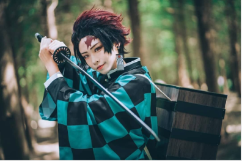
Kamado Nezuko.
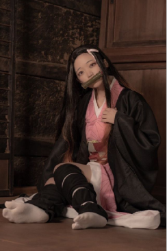
Ashibira Inosuke.
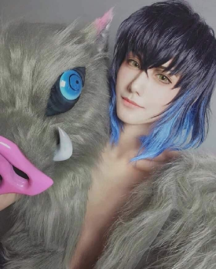
Agatsuma Zenitsu.
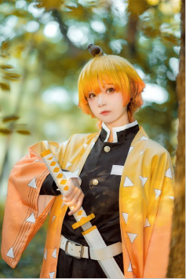
Kibutsuji Musan.
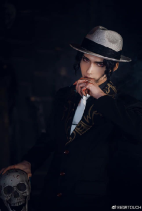
Tomioka Giyu.
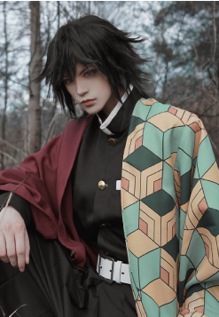
Shinobu Kocho.
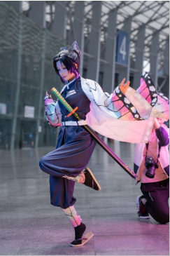
Kyōjurō Rengoku.
 Sanemi Shinazugawa.
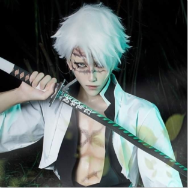
Gyōmei Himejima.
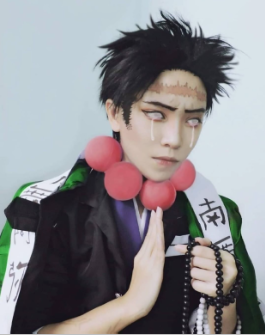
Tengen Uzui.
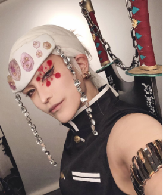
Mitsuri Kanroji.
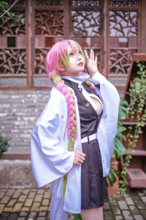
Muichirō Tokitō
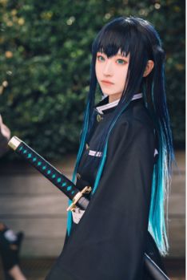
Obanai Iguro
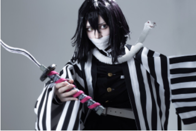
Merci à vous d'avoir visitez ce site, et plus particulièrement cette page, en espérant que celle-ci vous aura plu !
Sanemi Shinazugawa.
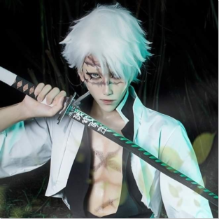
Gyōmei Himejima.
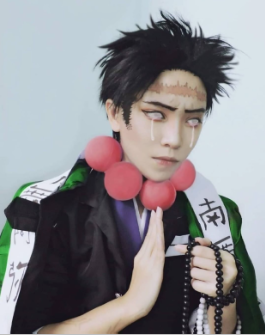
Tengen Uzui.
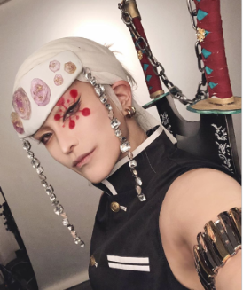
Mitsuri Kanroji.
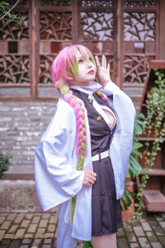
Muichirō Tokitō
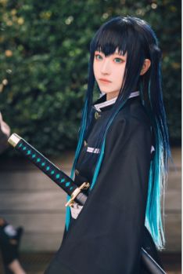
Obanai Iguro
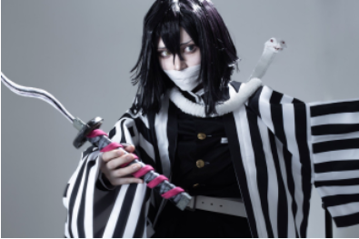
Merci à vous d'avoir visitez ce site, et plus particulièrement cette page, en espérant que celle-ci vous aura plu !
さようなら ！
AU REVOIR !